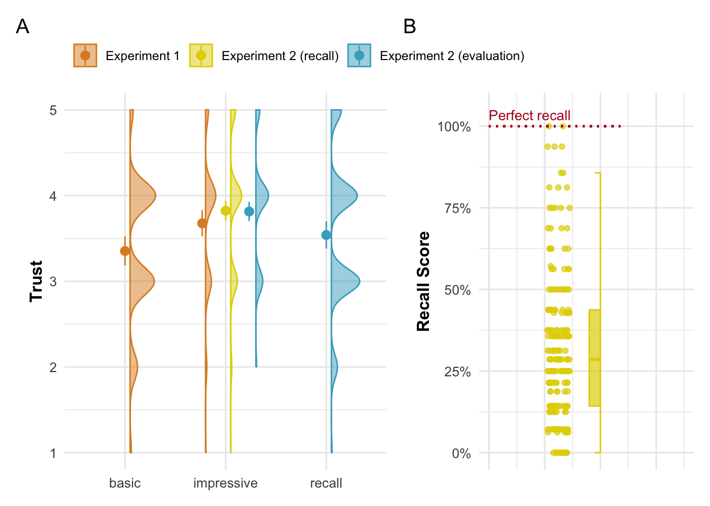

3 Trusting but forgetting impressive science
Abstract
Trust in science is associated with significant outcomes such as intent to vaccinate and belief in climate change. Around the globe, most people trust science at least to some extent. However, the causes of this trust aren’t well understood. Here we propose a ‘rational impression’ model of trust in science. In this model, people trust scientists because they are impressed by their findings, and this impression of trust persists even after knowledge of the specific content has vanished. We present evidence for this model in two experiments (total n = 696) with UK participants. In Experiment 1, impressive scientific findings lead participants to think of the scientists as more competent and their scientific discipline as more trustworthy. In Experiment 2, we show that participants have these impressions despite forgetting the content that generated them. The rational impression model can explain why people trust science without remembering much of it. It also stresses the relevance of science communication.
available as a preprint here:
Pfänder, J., Rouilhan, S. D., & Mercier, H. (2025). Trusting but forgetting impressive science. https://doi.org/10.31219/osf.io/argq5_v1
For supplementary materials, please refer to the preprint.
3.1 Introduction
Jon D. Miller, a pioneer in measuring science literacy, found that at the end of the 20th century, approximately 17% of Americans qualified as scientifically literate–a measure he described as the “level of skill required to read most of the articles in the Tuesday science section of The New York Times” (Miller 2004). His estimate for the early 1990s had been even lower, around 10%. By contrast, the level of trust in science in the US has been relatively high and remarkably stable (Funk and Kennedy 2020; Funk et al. 2020; Smith and Son 2013): Since the 1970s, on average 40% of Americans say they have a great deal of confidence in the scientific community, the second highest score among 13 institutions included in the US General Social Survey (GSS). How can we explain this gap between knowing science and trusting it? Here, we argue that people might trust science in large part because they have been impressed by it.
We begin by presenting global evidence that most people trust science at least to some extent. We then review existing explanations for why people trust science, as well as empirical observations that seem to violate their predictions. As an alternative explanation, we propose the ‘rational impression model’. Two experiments provide evidence in favor of this model.
Trust in science matters. It is related to many desirable outcomes, from acceptance of anthropogenic climate change (Cologna and Siegrist 2020) or vaccination (Sturgis, Brunton-Smith, and Jackson 2021; Lindholt et al. 2021) to following recommendations during COVID (Algan et al. 2021).
Across the globe, most people report trusting science at least to some extent (Wellcome Global Monitor 2018, 2020). Recently, a large survey in 68 countries found trust in scientists to be “moderately high” across all countries (mean = 3.62; sd= 0.70; Scale: 1 = very low, 2 = somewhat low, 3 = neither high nor low, 4 = somewhat high, 5 = very high), with not a single country below midpoint trust. A recent study in the US found that participants almost always accepted the scientific consensus on basic, non-politicized knowledge questions (e.g. ‘Are electrons are smaller than atoms?’), even those participants who said they do not trust science and who believed anti-science conspiracy theories, e.g. that the earth is flat (Pfänder, Kerzreho, and Mercier 2024).
How can we explain trust in science? The literature on the public understanding of science has generally focused not on explaining trust, but distrust, and more generally negative attitudes towards science (Bauer, Allum, and Miller 2007).
One explanation for distrust towards science is the alienation model (Gauchat 2011). According to this model, the “public disassociation with science is a symptom of a general disenchantment with late modernity, mainly, the limitations associated with codified expertise, rational bureaucracy, and institutional authority” (Gauchat 2011, 2). This explanation builds on the work of social theorists (Habermas 1989; Beck 1992; Giddens 1991; see Gauchat 2011 for an overview) who suggested that a modern, complex world increasingly requires expertise, and thus shapes institutions of knowledge elites. People who are not part of these institutions experience a lack of agency, resulting in a feeling of alienation. If the alienation model might account for some of the distrust towards science, its goal is not to explain why most people still trust science.
A second explanation which has dominated the literature on public understanding of science for decades (Bauer, Allum, and Miller 2007), is the deficit model. According to the deficit model, people do not trust science enough, because they do not know enough about it. The deficit model implies that when people trust science, it is because they are knowledgeable about it (Bauer, Allum, and Miller 2007).
In line with that view, large scale survey studies consistently identify education, and in particular science education, to be the strongest correlate of trust in science (Bak 2001; Noy and O’Brien 2019; Wellcome Global Monitor 2018, 2020): More educated people tend to trust science more. The deficit model provides a straightforward causal explanation for this correlation: education fosters trust in science by transmitting knowledge and improving understanding of science.
Evidence for the role of knowledge in trust in science, however, is far from conclusive. While there is no consensus among researchers on how to measure understanding of science (Gauchat and Andrews 2018), a widely used measure consists of asking people a set of basic science knowledge questions (see e.g. Durant, Evans, and Thomas 1989; Miller 1998). Past research has found science knowledge to be alarmingly low (Miller 2004; National Academies of Sciences, Engineering, and Medicine 2016), contrasting with the relatively high levels of trust in science. Moreover, science knowledge is only weakly associated with attitudes towards science (Allum et al. 2008). Other research has shown that the correlation between education and positive attitudes towards science holds even after controlling for science knowledge, which led the researchers to conclude that only part of the effect of education could be explained by transmitting enduring knowledge of science (Bak 2001).
3.2 The rational impression model
Here, we seek to explain the following stylized facts: (i) Globally, most people have at least some trust in science, and essentially everyone, at least in the US, trusts nearly all of basic science; (ii) Education, and in particular science education, is the strongest predictor of trust in science; (iii) Levels of science knowledge are relatively low, and the association between science knowledge and trust in science is weak.
All of these observations are compatible with a model of trust in science which we dub the rational impression model. According to this model, people trust science because they are impressed by it, but they forget about the findings that impressed them.
For an information to be impressive, at least two criteria should be met: (i) it is perceived as hard to uncover and (ii) there is reason to believe it true. By (i), we mean information that most people would have no idea how to find out themselves. For example, most people would probably only be mildly impressed by someone telling them that a given tree has exactly 110,201 leaves. Even though obtaining this information implies an exhausting counting effort, everyone in principle knows how to do it. By contrast, finding out that it takes light approximately 100,000 years to travel from one end of the Milky Way to the other is probably impressive to most people, as they would not know how such a distance can be measured. Regarding (ii), people can sometimes judge the accuracy of scientific findings for themselves, for example when they are exposed to accessible and convincing explanations in school, e.g. simple explanations that have a broad explanatory scope (Read and Marcus-Newhall 1993; Lombrozo 2007; for a review, see Lombrozo 2006). When people cannot evaluate the quality of the information for themselves, they need to rely on other cues to establish whether it might be true or not. One such cue is the degree of consensus between different sources. It has been shown that when they lack relevant background knowledge, people rely on social consensus as a heuristic to judge the accuracy of a piece of information and the competence of its source (Pfänder, De Courson, and Mercier 2025). This heuristic is rational, in the sense that it leads to sound inferences if the sources are independent and unbiased. As a result, unless we suspect a conspiracy among scientists, we should be impressed when they agree on something like the length of the Milky Way, and think of the scientists as competent, even if we have no idea how they got to agree on this measure.
Once people are impressed, that impression tends to stick, even if specific content is forgotten. We commonly form impressions of the people around us while forgetting the details of how we formed these impressions: If a colleague fixes our computer, we might forget exactly how they fixed it, yet remember that they are good at fixing computers. As an extreme example, patients with severe amnesia can continue to experience emotions linked to events they could not recall (Feinstein, Duff, and Tranel 2010). More relevantly here, a study has shown that while people find some science-related explanations more satisfying than others, this did not predict how well they could recall the explanations shortly after (Liquin and Lombrozo 2022), suggesting that that impressions and knowledge formation can be quite detached.
The rational impression model of trust in science reconciles the stylized facts outlined above: If most people trust science (i), it is because most people receive at least some basic education that exposes them to impressive scientific findings, setting up a baseline of trust in science. If education is the main predictor of trust in science (ii), it is because education is the primary mean through which people are exposed to science. If the levels of science knowledge are low while trust in science is high (iii), it is because specific knowledge of science is forgotten, while the impression of competence and trust is maintained.
While the rational impression model, we have argued, can reconcile well-established facts about trust in science and science knowledge, there is no experimental evidence directly testing its central mechanism. This is the goal of the present studies.
3.3 The present studies
We tested the predictions of the rational impression model in two experiments (total n = 696): Experiment 1 tests whether impressive scientific findings lead people to think of the scientists as more competent and more trustworthy. Experiment 2 tests whether that impression persists even if specific content is forgotten. Figure 3.1 provides an overview of the main results of the two experiments.
Both experiments were preregistered, and the choice of sample size was informed by power simulations. All materials, data, and code can be found on Open Science Framework project page (https://osf.io/j3bk4/). All analyses were conducted in R (version 4.2.2) using R Studio. We used two-sided tests for all hypotheses. Unless mentioned otherwise, we report unstandardized estimates that can be interpreted in units of the original scales.
As part of this project, we conducted two additional experiments which we present in detail in the ESM. The first experiment (‘Experiment 1b’ in the ESM) is almost identical to Experiment 1, but suffered from a minor technical error during the implementation. Nonetheless, its findings are identical to those of Experiment 1. The second experiment (‘Experiment 2b’) was supposed to test the same hypothesis as Experiment 2, but the treatment–a very short distraction task–did not alter any of the outcome variables, suggesting that our outcome measures, a set of multiple-choice questions, was not sufficiently sensitive.
3.4 Experiment 1
The goal of Experiment 1 was to test whether exposure to impressive science content enhanced people’s trust in scientists and their discipline. Participants were presented with vignettes about scientific findings in the disciplines of entomology and archaeology. The impressiveness of the texts was manipulated by creating one ‘basic’ and one ‘impressive’ version for each of the disciplines (see Table 3.1). Impressiveness was manipulated within participants, but between disciplines: each participant was randomly assigned to see an impressive version for one discipline, and a basic version for the other discipline. We tested the following hypotheses:
H1a: After having read an impressive text about a discipline’s findings, compared to when reading a basic text, participants perceive that discipline’s scientists as more competent.
H1b: Across both conditions, participants who are more impressed by the text about a discipline also tend to perceive the scientists of that discipline as more competent.
H2a: After reading an impressive text about a discipline’s findings, compared to when reading a basic text, participants will trust the discipline more.
H2b: Across both conditions, participants who are more impressed by the text about a discipline also tend to trust the discipline more.
The results of two research questions, about perceptions of learning and of consensus, are reported in the ESM.
3.4.1 Methods
3.4.1.1 Participants
A power simulation (see OSF) suggested that the minimum required sample size to detect a statistically significant effect for all hypotheses with a power of 0.9 is 100 participants. We therefore recruited 100 participants from the UK via Prolific. One participant failed the attention check, resulting in a final sample of 99 participants (49 female, 50 male; \(age_\text{mean}\): 42.071, \(age_\text{sd}\): 12.857, \(age_\text{median}\): 40).
3.4.1.2 Procedure
After providing their consent to participate in the study and passing an attention check (see ESM), participants read a short introductory text, and then two vignettes (one basic and one impressive) about scientific findings in the disciplines of entomology and archaeology, in a randomized order. After reading each vignette, participants were asked: “How much do you feel you’ve learnt about [human history/insects] by reading this text?” [1 - Nothing, 2 - A bit, 3 - Some, 4 - Quite a bit, 5 - A lot]); “How impressive do you think the findings of the [archaeologists/entomologists] described in the text are?” [1 - Not very impressive, 2 - A bit impressive, 3 - Quite impressive, 4 - Very impressive, 5 - Extremely impressive]); “Would you agree that reading this text has made you think of [archaeologists/entomologists] as more competent than you thought before?” [1 - Strongly disagree, 2 - Disagree, 3 - Neither agree nor disagree, 4 - Agree, 5 - Strongly agree]); and “Having read this text, would you agree that you trust the discipline of [archaeology/entomology] more than you did before?” [1 - Strongly disagree, 2 - Disagree, 3 - Neither agree nor disagree, 4 - Agree, 5 - Strongly agree]. Finally, we asked: “To which extent do you think the findings from the short text you just read reflect a minority or a majority opinion among archaeologists?” [1 - Small minority, 2 - Minority, 3 - About half, 4 - Majority, 5 - Large majority].
3.4.1.3 Materials
Table 3.1 shows the stimuli used in Experiment 1.
| Impressive | Basic | |
|---|---|---|
| Archeology | Archaeologists, scientists who study human history and prehistory, are able to tell, from their bones, whether someone was male or female, how old they were, and whether they suffered from a range of diseases. Archaeologists can now tell at what age someone, dead for tens of thousands of years, stopped drinking their mother’s milk, from the composition of their teeth. Archaeologists learn about the language that our ancestors or cousins might have had. For instance, the nerve that is used to control breathing is larger in humans than in apes, plausibly because we need more fine-grained control of our breathing in order to speak. As a result, the canal containing that nerve is larger in humans than in apes – and it is also enlarged in Neanderthals. Archaeologists can also tell, from an analysis of the tools they made, that most Neanderthals were right-handed. It’s thought that handedness is related to the evolution of language, another piece of evidence suggesting that Neanderthals likely possessed a form of language. | Archaeology is the science that studies human history and prehistory based on the analysis of objects from the past such as human bones, engravings, constructions, and various objects, from nails to bits of pots. This task requires a great deal of carefulness, because objects from the past need to often be dug out from the ground and patiently cleaned, without destroying them in the process. Archaeologists have been able to shed light on human history in all continents, from ancient Egypt to the Incas in Peru or the Khmers in Cambodia. Archaeologists study the paintings made by our ancestors, such as those that can be found in Lascaux, a set of caves found in the south of France that have been decorated by people at least 30000 years ago. Archaeologists have also found remains of our more distant ancestors, showing that our species is just one among several that appeared, and then either changed or went extinct, such as Neanderthals, Homo erectus, or Homo habilis. |
| Entomology | Entomologists are the scientists who study insects. Some of them have specialized in understanding how insects perceive the world around them, and they have uncovered remarkable abilities. Entomologists interested in how flies’ visual perception works have used special displays to present images for much less than the blink of an eye, electrodes to record how individual cells in the flies’ brain react, and ultra-precise electron microscopy to examine their eyes. Thanks to these techniques, they have shown that some flies can perceive images that are displayed for just three milliseconds (a thousandth of a second) – about ten times shorter than a single movie frame (of which there are 24 per second). Entomologists who study the hair of crickets have shown that these microscopic hairs, which can be found on antenna-like organs attached to the crickets’ rear, are maybe the most sensitive organs in the animal kingdom. The researchers used extremely precise techniques to measure how the hair reacts to stimuli, such as laser-Doppler velocimetry, a technique capable of detecting the most minute of movements. They were able to show that the hair could react to changes in the motion of the air that had less energy than one particle of light, a single photon. | Entomologists are scientists who investigate insects, typically having a background in biology. They study, for example, how a swarm of bees organizes, or how ants communicate with each other. They also study how different insects interact with each other and their environment, whether some species are in danger of going extinct, or whether others are invasive species that need to be controlled. Sometimes entomologists study insects by observing them in the wild, sometimes they conduct controlled experiments in laboratories, to see for example how different environmental factors change the behavior of insects, or to track exactly the same insects over a longer period of time. An entomologist often specializes in one type of insect in order to study it in depth. For example, an entomologist who specializes in ants is called a myrmecologist. |
3.4.2 Results and discussion
As a manipulation check, we find that participants perceived the impressive texts to be more impressive (mean = 4.01, sd = 0.87; \(\hat{b}\) = 0.808 [0.569, 1.048], p < .001) than the basic texts (mean = 3.2, sd = 1.13).
Participants perceived scientists as more competent after having read an impressive text (H1a: \(\hat{b}_{\text{Competence}}\) = 0.495 [0.314, 0.676], p < .001; mean = 3.76, sd = 0.9) than after having read a basic one (mean = 3.26, sd = 0.8). Pooled across both conditions, participants’ impressiveness ratings were positively associated with competence: When participants reported being more impressed, they evaluated scientist#s as more competent (H1b: \(\hat{b}\) = 0.407 [0.312, 0.502], p < .001).
Participants also trusted a discipline more after having read an impressive text (H2a: \(\hat{b}_{\text{trust}}\) = 0.323 [0.17, 0.476], p < .001; mean = 3.68, sd = 0.87) than after having read a basic one. Participants’ impressiveness ratings were positively associated with trust when pooling across all conditions (H2b: \(\hat{b}\) = 0.296 [0.206, 0.385], p < .001).
3.5 Experiment 2
In Experiment 1, exposure to impressive scientific content increased trust in the relevant scientific discipline, and the perceived competence of the relevant scientists. Experiment 2 sought to test whether these perceptions were at least partly independent of being able to recall the specific content that had induced them. Experiment 2 consisted of a ‘recall study’ and an ‘evaluation study.’ In the recall study, each participant was assigned to read the impressive version of one of the vignettes from Experiment 1 (Table 3.1). As in Experiment 1, participants were asked about how impressed they were by the findings and whether they had changed their perception of the scientists’ competence and their trust in the scientific discipline.
In line with the findings of Experiment 1, we expected participants to have increased perceptions of competence and trust in scientists after having read the impressive texts:
H1a: Participants perceive scientists as more competent after having read an impressive text about their discipline’s findings.
H1b: Participants trust a discipline more after having read an impressive text about the discipline’s findings.
In Experiment 2, participants were also given a recall task: They were asked to rewrite the text of the vignette they had just read, from memory. We predicted that participants would not be able to recall all the information presented in the short vignettes right after having read them (see methods section for details):
H2: Participants are not able to recall all the information of the original texts.
This hypothesis, however, only tested whether people forgot any of the content, potentially including non-impressive content. To address this issue, we asked participants to select elements of the vignettes they found impressive (see Table 3.2). We predicted that even for the subset of information that a participant said they found impressive, they forgot at least some of the content:
H3: Participants are not able to recall all the impressive information–as rated by themselves–contained in the original text.
H3 tests the hypothesis that participants immediately forget at least some of the information that has impressed them. However, it could be that participants in fact remember enough impressive information to justify the increase in perceived trust (in the discipline) and competence (in the scientists). To test whether that was the case, we conducted an evaluation study.
A new sample of participants was recruited, and they were randomly assigned to one of two conditions: In the ‘original impressive text’ condition, participants were assigned to read one of the two impressive texts of the recall study. In the ‘recalled impressive text’ condition, participants read one of the recall texts written by the participants of the recall study. We predicted that participants in the evaluation study would be less impressed by the texts recalled by the participants of the recall study, compared to the original impressive vignette texts (see Table 3.1) and, accordingly, would have less positive perceptions of the scientists’ competence and the trustworthiness of their discipline:
H4a: The texts produced by participants of the experiment as a result of the recall task will be less impressive than the original texts, as rated by participants of the evaluation study.
H4b: Participants of the evaluation study perceive scientists as more competent after having read the original texts, compared to after having read the texts produced by participants of the experiment as a result of the recall task.
H4c: Participants of the evaluation study trust a discipline more after having read the original texts, compared to after having read the texts produced by participants of the experiment as a result of the recall task.
3.5.1 Methods
3.5.1.1 Participants
In a power simulation (see OSF), we varied the sample size of the recall study and effect sizes (assuming the same effect size for all hypotheses in each scenario). For all simulations, a constant evaluation study sample size of 400 participants was assumed (only relevant for H4a, b and c). The power simulation suggested that a power level of 90% would be reached when assuming a medium effect size of 0.5 with 50 participants. Due to uncertainty about our assumptions, we recruited a sample of 203 participants for the recall study, and a sample of 406 participants for the evaluation study. Although this was not the focus of the simulation, the results showed that for a medium effect size of 0.5, a sample size of 400 for the evaluation study yielded statistical power of greater than 90% for all hypotheses based on this sample (H4a, b and c). All participants were from the UK, recruited via Prolific, and paid to complete the experiment.
The final sample comprised 198 participants (four failed attention checks; 99 female, 99 male; \(age_\text{mean}\): 42.646, \(age_\text{sd}\): 15.547, \(age_\text{median}\): 40) for the recall study, and 399 participants for the evaluation study (seven failed attention checks; 201 female, 198 male; \(age_\text{mean}\): 41.709, \(age_\text{sd}\): 13.483, \(age_\text{median}\): 40).
3.5.1.2 Procedure
3.5.1.2.1 Recall study
In the recall study, after having consented to take part in the study and passing an attention check (see ESM), participants read the impressive version of one of the vignettes from Experiment 1 (Table 3.1). After reading the text, as in Experiment 1, participants were asked about changes in their perception of the scientists’ competence, and trust in the scientists’ discipline. They were also asked about the impressiveness of the text they read. The order of these questions was randomized.
Next, as an open-ended question, participants were asked to recall as much information as they could of the texts they had just read. They were told that their texts would be read by future participants. To further motivate participants, they were also told that they would get a bonus for recalling (without external aids) accurate information. They were not told how much that bonus would be. We paid them 5p per point gained in the recall task (see methods for how these points were assigned). This way, participants could reach a maximum bonus of 0.8 pound for archaeology (0.05p x 2 points x 8 content elements) and 0.7 pound (0.05p x 2 points x 7 content elements) for entomology. After that, participants were presented with the evaluation grid that we used to assess the open answers from the recall task (see Table 3.2). For each knowledge element, we asked participants to indicate whether they found it impressive or not (“Do you think this piece of information is impressive?” [Yes; No]). At the end of the recall study, participants were asked about their education level.
3.5.1.2.2 Evaluation study
After consenting to taking part in the study and passing an attention check (see ESM), participants read either one of the original vignettes, or a text produced as part of the recall task from the recall study. For those participants assigned to read a recall text, the text was randomly sampled (with replacement) from a pool of recall answers. Orthographic and grammatical mistakes in these texts were corrected with the help of ChatGPT beforehand. We had preregistered to sample among all recall answers from participants of the recall study. However, checking recall scores after the recall study and before launching the evaluation study, we found them to be very low on average (see ESM). To avoid having the answers of less motivated participants in our sample, we decided to only select answers that scored at least as well as the median in the recall measure of the evaluation study. This selection is conservative in that it makes it harder to confirm our predictions under H4.
After reading the text, just as in the recall study, participants were asked about changes in their perception of the scientists’ competence, trust in the scientists’ discipline, and the impressiveness of the text they read. The order of these questions was randomized. Finally, participants were asked about their education level.
3.5.1.3 Materials
For Experiment 2, besides the texts recalled by the participants of the recall study, the impressive version of the stimuli used in Experiment 1 was used (see Table 3.1).
| Archaeology | Entomology |
|---|---|
| 1. Archaeologists can determine whether someone was male or female from their bones. | 1. Entomologists use special displays to present images to flies for extremely short periods (less than the blink of an eye). |
| 2. Archaeologists can determine how old someone was from their bones. | 2. Entomologists can record how individual cells in flies’ brains react using electrodes. |
| 3. Archaeologists can determine whether someone suffered from a range of diseases from their bones. | 3. Entomologists use ultra-precise electron microscopy to examine flies’ eyes. |
| 4. Archaeologists can determine at what age someone stopped drinking their mother’s milk, based on the composition of their teeth. | 4. Some flies can perceive images displayed for just three milliseconds. This duration is about ten times shorter than a single movie frame. |
| 5. The nerve controlling breathing is larger in humans than in apes. The canal containing that nerve is also larger in humans and Neanderthals than in apes. | 5. Crickets have microscopic hairs situated on antenna-like organs at their rear. |
| 6. The fact that the nerve controlling breathing is larger in humans is possibly due to the need for fine-grained control of breathing to speak. | 6. Crickets' hairs are possibly the most sensitive organs in the animal kingdom. They react to changes in air motion with less energy than one photon. |
| 7. Archaeologists determined that most Neanderthals were right-handed, based on analysis of Neanderthals’ tools. | 7. Entomologists measured how cricket hairs react to stimuli, using laser-Doppler velocimetry, which can detect extremely minute movements. |
| 8. Handedness is thought to be related to the evolution of language. This suggests that Neanderthals likely possessed a form of language. | |
| For each knowledge element, participants could score a maximum of two points. | |
3.5.1.3.1 Recall
As shown in Table 3.2, the texts were divided into a series of knowledge elements. For each participant, the extent to which they recalled each of the different elements was coded. A recall score based on how many of these elements they mentioned in their open-ended answer was then calculated.
The coding was done with the help of ChatGPT (see ESM for the exact prompt). The instructions were: to code 0 if a piece of knowledge was not mentioned or was mentioned with significant errors (e.g., writing “the nerve controlling fine hand movement is bigger in humans” instead of “the nerve controlling breathing is bigger in humans”); to code 1 if the piece of knowledge was mentioned, but some important elements were missing (e.g., writing “Archaeologists can determine at what age someone stopped drinking their mother’s milk” instead of “Archaeologists can determine at what age someone stopped drinking their mother’s milk from the composition of their teeth”), and/or there were some mistakes (e.g., writing “Archaeologists can determine at what age someone stopped drinking their mother’s milk, based on the bones” instead of “Archaeologists can determine at what age someone stopped drinking their mother’s milk based on the teeth”); to code 2 if the piece of knowledge was mentioned with all the main content, even if the participant had not used the precise technical words (e.g., “neanderthals,” “laser-Doppler velocimetry”) or had changed the phrasing in other ways. These instructions were intended to produce relatively generous recall scores.
Since the two vignettes contained a different number of total knowledge elements according to our evaluation grid (8 for archaeology, 7 for entomology), we used a relative measure for the final recall score, namely the share of obtained points among all possible points (possible range from 0 to 1, below the results are presented in percentages recalled for clarity). Practically, for all tests on recall, we computed a forgetting score (1-recall score), and tested whether it was statistically significantly different from zero.
To validate the scores assigned by ChatGPT, they were compared to scores assigned by two human coders for a subsample of 80 randomly chosen texts (half on archaeology, half on entomology). The human coders were unaware of the study context and the hypotheses. They were provided with the prompt given to ChatGPT. To measure the agreement between ChatGPT and the human coders, we calculated an intraclass correlation coefficient (ICC) for two-way designs with random raters (Ten Hove, Jorgensen, and Ark 2024). Following the guidelines in Heyman et al. (2014), we preregistered taking 0.7 as a threshold for acceptable reliability. In our sample, we observe an ICC of 0.838 [se = 0.032]. Human coders and ChatGPT, on average, assigned exactly the same score in 72.9% of all rating instances (compared to 73.5% of exact agreement between the two human coders). Following our preregistration, we consider the high agreement as suggested by the ICC a validation of the use of ChatGPT.
3.5.1.3.2 Recall of impressive items
After giving their post-recall evaluation of scientists’ competence and trust in the discipline, participants were presented with the evaluation grid shown in Table 3.2 for the respective discipline they had been randomized to see. For each element in the evaluation grid, they were asked whether they found it impressive or not. Then, for each participant, the recall score was computed just as described above, but only on the subset of those elements they had subjectively rated as impressive.
3.5.2 Results and discussion
3.5.2.1 Recall study
First, as a kind of validation check, we note that most participants declared finding all knowledge elements to be impressive (\(mean_{\text{Archeology}}\) = 7.04, \(median_{\text{Archeology}}\) = 8, number of knowledge elements = 8; \(mean_{\text{Entomology}}\) = 6.39, \(median_{\text{Entomology}}\) = 7, number of knowledge elements = 7).
For the first set of hypotheses, we tested whether the average scores for perceived change in competence and trust were significantly different from their respective scale midpoints (which corresponds to no change in perception). We first tested the outcome variables’ distributions for normality, using a Shapiro-Wilk test. In all cases, this test suggested that the data is considered non-normally distributed (p < 0.05). Following the preregistration, we therefore did not run a default one-sample t-test, but used a Wilcoxon signed-rank test instead. H1a and H1b were both supported: After having read an impressive text about the findings of a scientific discipline, participants saw the scientists as more competent (H1a: median = 4, W = 12388.5, p < .001), and their discipline as more trustworthy (H1b: median = 4, W = 9714.5, p < .001).
Despite having been impressed, a first descriptive analysis suggested that participants seemed to recall only very little information (\(mean\) = 32%, \(sd\) = 23%, \(median\) = 29%). Given these low average scores, we opted for a more conservative approach to testing H2 and H3: We defined the median as a cut-off and selected only the 50% of participants who had the highest recall scores, removing participants who may have put in less effort. Since we hypothesized that participants would forget content, this selection made it less likely that the hypotheses would be confirmed. Even for the 50% participants with the best recall, both hypotheses were supported: Participants did not perfectly recall all information (H2: median = 0.43, W = 5778, p < .001) and they did not recall all information contained in the elements they judged as impressive themselves (H3: median = 0.43, W = 5778, p < .001)1.
3.5.2.2 Evaluation study
For H4a, b and c, trust, competence and impressiveness ratings were compared between the ‘original impressive text’ and the ‘recalled impressive text’ conditions of the evaluation study using independent sample t-tests. Participants who read on of the two original impressive texts reported being more impressed (H4a: \(\hat{b}_{\text{Impressiveness}}\) = 0.387, t = 5.411, p < .001), rated the scientists of the respective discipline as more competent (H4b: \(\hat{b}_{\text{Competence}}\) = 0.274, t = 3.074, p = 0.002), and had more trust in the respective discipline (H4c: \(\hat{b}_{\text{Trust}}\) = 0.274, t = 3.398, p < .001) than participants who read one of the texts of the recall task.
3.6 Discussion
It has long been a puzzle to the deficit model–which suggests that trust in science is primarily driven by science knowledge–that knowledge of science is at best weakly associated with science attitudes (Allum et al. 2008; National Academies of Sciences, Engineering, and Medicine 2016). The rational impression model makes sense of this: It predicts that people trust science primarily because they have been impressed by it, not because they remember much of the knowledge that impressed them.
Two experiments provide evidence for this model. Experiment 1 showed that impressive scientific findings lead people to think of scientists as more competent and trust science more. Experiment 2 showed that these impressions are formed even though participants forget the content that generated them almost immediately after reading it.
How can this model be rational, if it posits that trust is largely detached from knowledge? It is rational in that the heuristics it builds on lead to sound inferences in many contexts. If someone discovers something that is hard to know, such as the size of the Milky Way, and there appears to be a consensus, we should expect them to be competent, even without knowing the details of how they made this discovery. Even forgetting specific knowledge is not irrational: It has been argued that one of the main functions of episodic memory is to justify our beliefs in communication with others (Mahr and Csibra 2018). As a result, we should be particularly good at remembering things we might need to convince others of. In this regard, incentives of remembering science seem to be weak: Most exposure to science happens at school, and there is little reason for young learners’ minds to anticipate having to convince others of the merits of specific scientific findings, which are typically of little practical relevance to them, and which appear to be consensually accepted.
Does this mean that scientific education should focus on impressive but potentially hard to grasp findings, instead of fostering a proper understanding of more basic discoveries? No, for at least two reasons. First, for some students at least, this knowledge will be remembered, and will prove important in their lives. Second, positive impressions of science can also be created by a proper understanding of its explanations, methods, etc. – even if, once again, that understanding is then often lost. However, our findings do suggest that science educators should not despair when they observe the low rates of science knowledge in adults, since the exposure to science they provided is arguably responsible for creating a bedrock of trust in science.
The present framework also stresses the vital role that can be played by science communication. The relationship between science communication and trust in science has already been explored in depth (e.g., Weingart and Guenther 2016; for a recent review see König et al. 2023), but we believe the present model might make a useful contribution. In particular, it suggests that, even though more understanding of the underlying methods is always preferable (König et al. 2023), even a relatively superficial exposure to impressive findings can bolster trust in science. An important caveat is that impressive findings that haven’t yet gained the approval of the community might be particularly likely to backfire if people learn they have been disproven (on the importance of presenting a measure of consensus alongside scientific information, see König et al. 2023).
The present experiments have a number of limitations: First, they were conducted on convenience samples recruited in a single country, the UK. Second, they were conducted within a very short time frame. While we can show that participants almost immediately forget about impressive content, it is not clear from our study for how long the impressions persist (although in other contexts impressions formed on the basis of a much more superficial exposure have been shown to last for months, Gunaydin, Selcuk, and Zayas 2017). Future studies could extend our findings to other populations and to longer time frames.
3.6.0.1 Data availability
Data for all experiments and the simulations is available on the OSF project page (https://osf.io/j3bk4/). Note that on the project page, all materials related to what is referred to as “Experiment 1” in this paper are stored under “experiment_2”, and all materials related to “Experiment 2” in this paper are stored under “experiment_4”. This numbering is due to the original order in which experiments for this project were conducted. For a detailed report on the other experiments conducted as part of this project, see the ESM.
3.6.0.2 Code availability
The code used to create all results (including tables and figures) of this manuscript is also available on the OSF project page (https://osf.io/j3bk4/).
3.6.0.3 Competing interest
The authors declare having no competing interests.
The two median values for all information and for the subset of impressive information are not not exactly the same, but very similar, because participants rated most knowledge elements as impressive, making the general recall score and the recall score for impressive elements very similar.↩︎